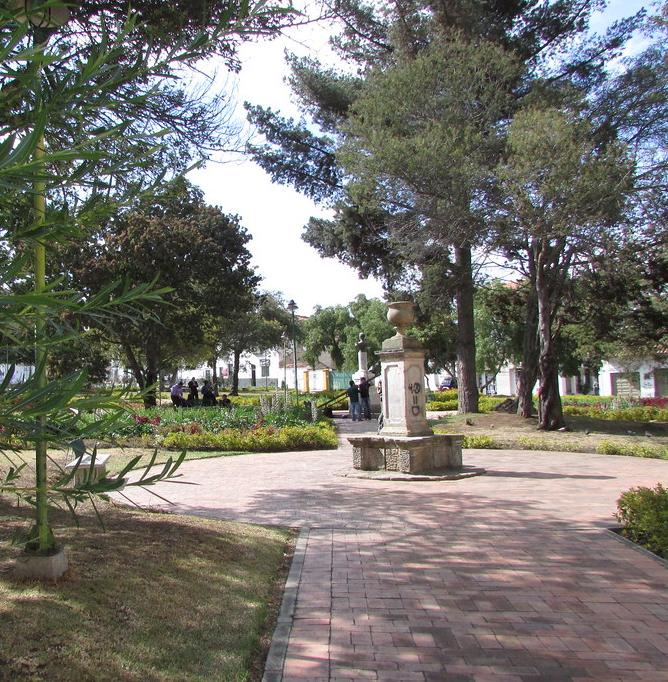

LUGARES TURÍSTICOS
Por lo cual, dar un vistazo a este lugar es como darnos un viaje en el tiempo a todos los acontecimientos por los cuales ha pasado esta capital. Los sitios los cuales puedes visitar para disfrutar de esta experiencia son: Tunja es uno de los lugares más históricos y ricos culturalmente en Colombia.
"Iglesia de santo domingo"
lugar turistico 1
"Plaza de bolivar"
lugar turistico 2
"Casa del fundador"
lugar turistico 3

"Parque pinzon"
lugar turistico 4
"Parque pinzon"
lugar turistico 5

"Parque pinzon"
lugar turistico 6
"Parque pinzon"
lugar turistico 7

"Parque pinzon"
lugar turistico 8

"Parque pinzon"
lugar turistico 9